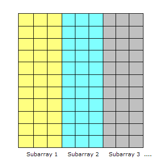
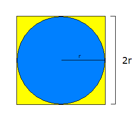

Code for Educators
This tutorial covers the basics of parallel programming and the MapReduce programming model. The pre-requisites are significant programming experience with a language such as C++ or Java, and data structures & algorithms.
In the early days of computing, programs were serial, that is, a program consisted of a sequence of instructions, where each instruction executed one after the other. It ran from start to finish on a single processor.
Parallel programming developed as a means of improving performance and efficiency. In a parallel program, the processing is broken up into parts, each of which can be executed concurrently. The instructions from each part run simultaneously on different CPUs. These CPUs can exist on a single machine, or they can be CPUs in a set of computers connected via a network.
Not only are parallel programs faster, they can also be used to solve problems on large datasets using non-local resources. When you have a set of computers connected on a network, you have a vast pool of CPUs, and you often have the ability to read and write very large files (assuming a distributed file system is also in place).
The first step in building a parallel program is identifying sets of tasks that can run concurrently and/or paritions of data that can be processed concurrently. Sometimes it's just not possible. Consider a Fibonacci function:
Fk+2 = Fk + Fk+1
A function to compute this based on the form above, cannot be "parallelized" because each computed value is dependent on previously computed values.
A common situation is having a large amount of consistent data which must be processed. If the data can be decomposed into equal-size partitions, we can devise a parallel solution. Consider a huge array which can be broken up into sub-arrays. 
If the same processing is required for each array element, with no dependencies in the computations, and no communication required between tasks, we have an ideal parallel computing opportunity. Here is a common implementation technique called master/worker.
The MASTER:
The WORKER:
This model implements static load balancing which is commonly used if all tasks are performing the same amount of work on identical machines. In general, load balancing refers to techniques which try to spread tasks among the processors in a parallel system to avoid some processors being idle while others have tasks queueing up for execution.
A static load balancer allocates processes to processors at run time while taking no account of current network load. Dynamic algorithms are more flexible, though more computationally expensive, and give some consideration to the network load before allocating the new process to a processor.
As an example of the MASTER/WORKER technique, consider one of the methods for approximating pi. The first step is to inscribe a circle inside a square:

The area of the square, denoted As = (2r)2 or 4r2. The area of the circle, denoted Ac, is pi * r2. So:
pi = Ac / r2 As = 4r2 r2 = As / 4 pi = 4 * Ac / As
The reason we are doing all these algebraic manipulation is we can parallelize this method in the following way.
NUMPOINTS = 100000; // some large number - the bigger, the closer the approximation
p = number of WORKERS;
numPerWorker = NUMPOINTS / p;
countCircle = 0; // one of these for each WORKER
// each WORKER does the following:
for (i = 0; i < numPerWorker; i++) {
generate 2 random numbers that lie inside the square;
xcoord = first random number;
ycoord = second random number;
if (xcoord, ycoord) lies inside the circle
countCircle++;
}
MASTER:
receives from WORKERS their countCircle values
computes PI from these values: PI = 4.0 * countCircle / NUMPOINTS;
Now that we have seen some basic examples of parallel programming, we can look at the MapReduce
programming model. This model derives from the map and reduce
combinators from a functional language like Lisp.
In Lisp, a map takes as input a function and a sequence of values. It then applies the function to
each value in the sequence. A reduce combines all the elements of a sequence using a binary operation.
For example, it can use "+" to add up all the elements in the sequence.
MapReduce is inspired by these concepts. It developed within Google as a mechanism for processing large amounts of raw data, for example, crawled documents or web request logs. This data is so large, it must be distributed across thousands of machines in order to be processed in a reasonable time. This distribution implies parallel computing since the same computations are performed on each CPU, but with a different dataset. MapReduce is an abstraction that allows Google engineers to perform simple computations while hiding the details of parallelization, data distribution, load balancing and fault tolerance.
Map, written by a user of the MapReduce library, takes an input pair and produces a set of intermediate key/value pairs. The MapReduce library groups together all intermediate values associated with the same intermediate key I and passes them to the reduce function.
The reduce function, also written by the user, accepts an intermediate key I and a set of values for that key. It merges together these values to form a possibly smaller set of values. [1]
Consider the problem of counting the number of occurrences of each word in a large collection of documents:
map(String key, String value): // key: document name // value: document contents for each word w in value: EmitIntermediate(w, "1"); reduce(String key, Iterator values): // key: a word // values: a list of counts int result = 0; for each v in values: result += ParseInt(v); Emit(AsString(result)); [1]
The map function emits each word plus an associated count of occurrences ("1" in this example). The reduce function sums together all the counts emitted for a particular word.
[1] Dean, Jeff and Ghemawat, Sanjay. MapReduce: Simplified Data Processing on Large Clusters http://labs.google.com/papers/mapreduce-osdi04.pdf
[2] Lammal, Ralf. Google's MapReduce Programming Model Revisited. http://www.cs.vu.nl/~ralf/MapReduce/paper.pdf
[3] Open Source MapReduce: http://lucene.apache.org/hadoop/